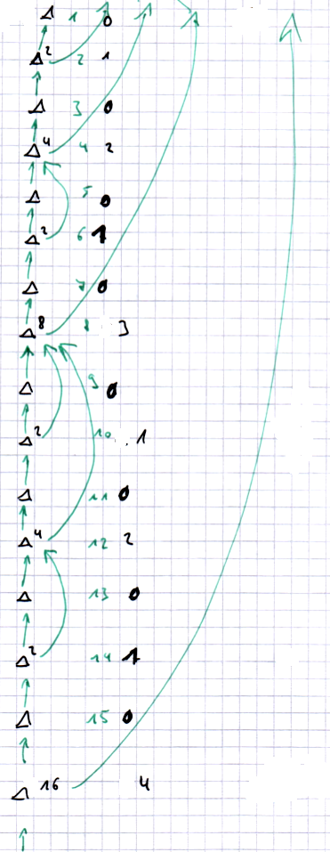

Implementation of stores with a branched view of history.
General idea
Each commit has a name and a reference to a parent commit. This can be
used to construct arbitrarily branched commit trees. Each commit stores
all information of keys/values created, changed, or deleted in this
commit. To get an actual value, we then have to inspect all
predecessors. To have suitable performance, we store (duplicate) the
data of some of the parent commits on certain commits. This way, we do
not have to traverse the entire parent hierarchy, but only a part of
it. In the implementation, thus each commit also has a delta
predecessor. This it the (grand) parent up to which the commit contains
all data. So to get the actual value for some key, only the delta
predecessor and its delta predecessors have to be checked. A commit
with a delta predecessors of null contains the full data.
Deduplication
As values are potentially stored in multiple commits, even when the
data did not change, we implement deduplication. For this, a value is
not stored directly, but instead a reference if created for the data.
The reference is stored instead of the actual value in the key, and the
actual value is stored in a separate key that can be found with the
reference. To create references, we use the SHA-1 hash algorithm. In
practice, SHA-1 is fast enough and has a sifficiently low collision
probability. It is also the same technique as used in git, so this
should be safe. Obviously, for data that is smaller than a SHA-1 hash,
this does not save anything and so we store the data directly in this
case.
Managing delta predecessor links
The critical factor about this kind of storage is how to manage the
delta predecessor links. Being too strict with their creation will
result in very slow data access as many predecessors have to be
scanned. Being too lenient will result in much data being duplicated,
increasing write times and storage requirements. The solution we use is
that a commit node at level N (with the first commit having level 1)
contains the data from K delta predecessors, where K is the number of
trailing zeros in the binary representation of N. So the first commit
contains only its own data. The second commit (10) contains also the
data from commit 1. The 3rd commit (11) contains only its own data. The
4th commit (100) contains data from the 3rd and 2nd commit and hence
the full data. Commit number 6 (110) has the data from the 5th commit,
so for performing a lookup, we have to check values in commits 6 (own
commit) and 4 (delta parent). As 4th commit has all data, this provides
the correct answer. A graphical example up to level 16 is given in the
following image.

This way, for a commit at level N we should have to look at at most
log(N) commits. On the other hand, the storage overhead should also be
increased by at most a log factor.